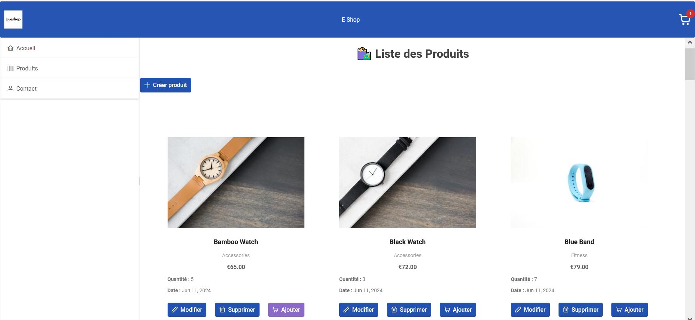
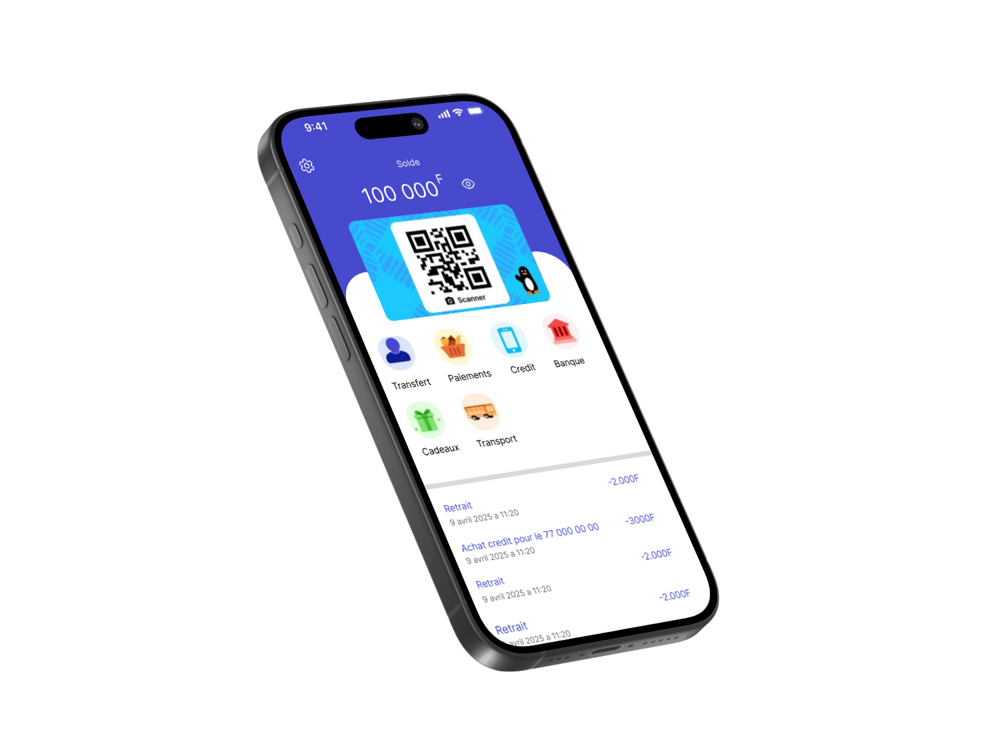
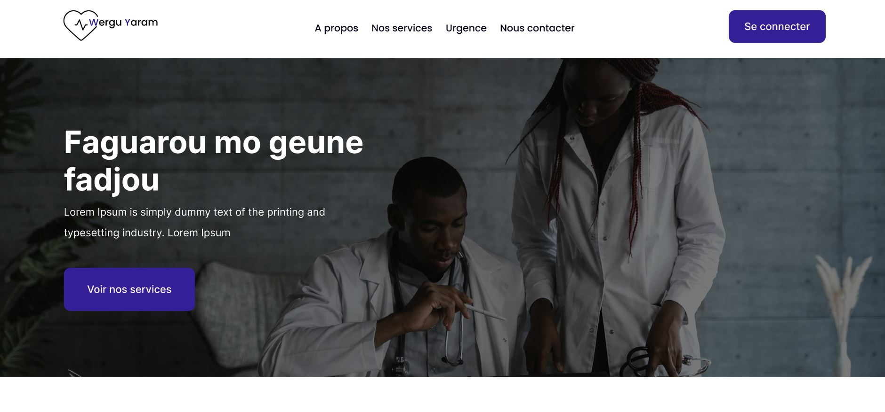
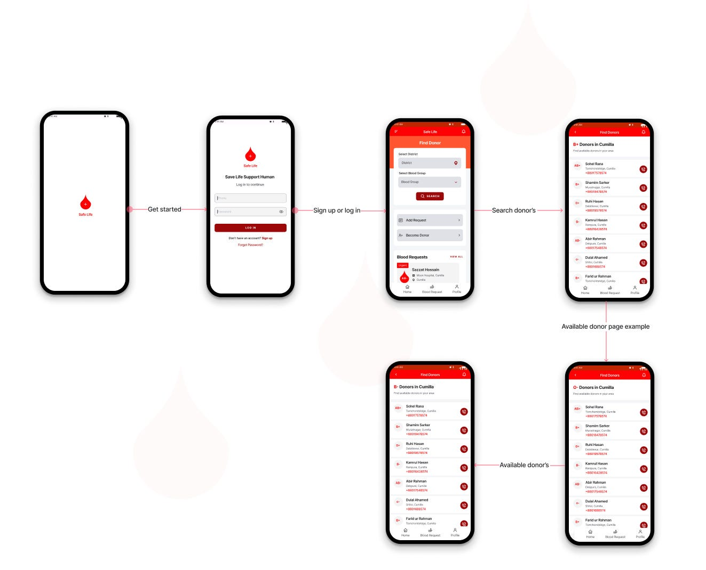
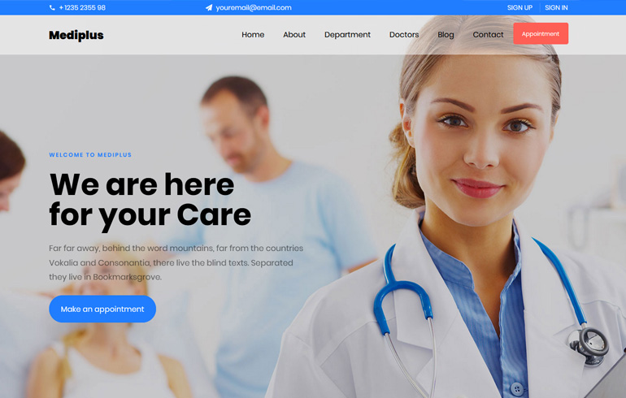
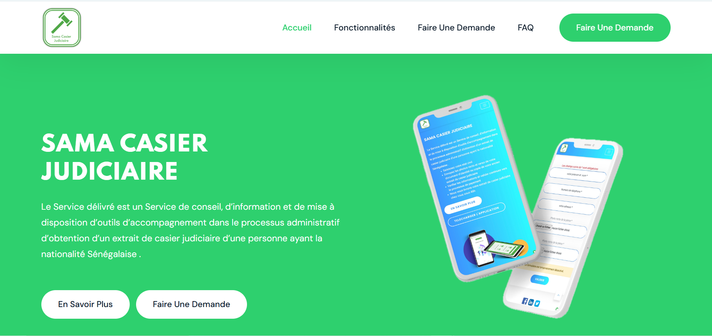

Nos Réalisations

Boutique en ligne
Dans le cadre de l’évolution de mon site vitrine, j’ai réalisé une boutique en ligne permettant aux visiteurs de découvrir et d’acheter facilement les produits proposés. Le projet comprend une interface utilisateur simple et intuitive, un catalogue produit dynamique, un système de panier, ainsi qu’un module de commande. Cette boutique vise à améliorer l’expérience client tout en offrant à l’entreprise un canal de vente supplémentaire.

Application Mobile
Dans le cadre de la digitalisation de mon site vitrine, j’ai développé une application mobile multiplateforme avec Flutter. Cette application permet aux utilisateurs de consulter les informations de l’entreprise, découvrir les produits et services, et rester informés grâce à un système de notifications push. Parmi les principales fonctionnalités : Interface moderne et responsive Intégration des contenus du site vitrine Formulaire de contact et de prise de rendez-vous Carte interactive pour localiser l’entreprise Notifications pour les actualités et offres spéciales L’application est connectée à une base de données en ligne (Firebase) pour une mise à jour en temps réel des contenus. Ce projet a pour objectif de renforcer la présence mobile de l’entreprise et de faciliter la communication avec les clients.

Design Figma
J’ai réalisé le design de l’interface utilisateur (UI) de mon site vitrine à l’aide de Figma, un outil de maquettage collaboratif. Ce travail m’a permis de concevoir une maquette moderne, claire et responsive, en mettant l’accent sur l’expérience utilisateur (UX). Le design inclut les principales sections du site : page d’accueil, présentation de l’entreprise, services, galerie, et contact. Chaque élément a été pensé pour refléter l’identité visuelle de la marque et optimiser la navigation.
le développement de logiciels
Dans le cadre de la digitalisation des processus internes, j’ai développé un logiciel de gestion multiplateforme à l’aide de Flutter pour l’interface et Firebase pour le backend. Ce logiciel permet de gérer efficacement les utilisateurs, les données clients, les stocks et les rapports. Parmi ses principales fonctionnalités : Tableau de bord interactif Authentification sécurisée (Firebase Auth) Base de données en temps réel (Cloud Firestore) Génération automatique de rapports Notifications push pour les rappels et mises à jour Le projet a été conçu avec une attention particulière à l’ergonomie, à la performance, et à la scalabilité du système. Il répond aux besoins d'une entreprise souhaitant automatiser ses tâches courantes tout en restant mobile.
la création de bases de données
J’ai conçu et mis en place une base de données relationnelle destinée à structurer, stocker et gérer efficacement les données d’une application. Le projet a débuté par une analyse des besoins, suivie de la modélisation avec un MCD et un MLD, puis la création physique de la base via MySQL (ou PostgreSQL/SQLite selon le cas). Les étapes clés comprenaient : La définition des entités et des relations L’optimisation des requêtes SQL La gestion des contraintes d’intégrité La mise en place de procédures stockées et de vues La sécurisation des accès utilisateurs Cette base de données est au cœur du fonctionnement de l’application et permet une gestion rapide, fiable et évolutive des informations.

Application de don de sang
J’ai développé une application mobile dédiée au don de sang dans le but de faciliter l'accès aux informations pour les donneurs et les établissements de santé. L’application permet aux utilisateurs de s'inscrire en tant que donneur, de consulter les centres de don à proximité, de planifier et réserver des créneaux pour leurs dons, et de recevoir des notifications de rappels. L’application comprend également une base de données en temps réel pour gérer les informations des donneurs, des stocks de sang, et des réservations. Elle utilise Flutter pour garantir une expérience fluide et multiplateforme (iOS et Android), avec un backend sécurisé via Firebase pour les notifications et la gestion des données. Ce projet vise à encourager le don de sang en simplifiant le processus pour les donneurs et en assurant une meilleure gestion des stocks pour les établissements médicaux.

Site de pharmacie
J’ai développé un site web de pharmacie afin de permettre aux clients de consulter une large gamme de médicaments, produits de santé et services pharmaceutiques en ligne. Le site offre une interface conviviale avec un catalogue de produits détaillé, une fonctionnalité de recherche avancée, ainsi qu’une option de commande en ligne avec livraison à domicile. L’interface est optimisée pour une navigation fluide sur tous types d’appareils, et le système de paiement en ligne est sécurisé. En plus de la vente de médicaments, le site propose des services comme la consultation de prescriptions et la possibilité de prendre des rendez-vous pour des conseils pharmaceutiques. Le projet a été conçu avec une attention particulière à la sécurité des données médicales et à l’expérience utilisateur, en respectant les normes de confidentialité et de régulation en vigueur.

Application sama casier
J’ai développé l’application Sama Casier pour faciliter la gestion des casiers dans divers environnements comme les écoles, les bureaux ou les centres sportifs. Cette application permet aux utilisateurs de réserver, gérer et libérer un casier de manière simple et rapide, tout en offrant une interface claire et intuitive. Parmi les principales fonctionnalités : Réservation de casiers : Permet aux utilisateurs de réserver un casier pour une période définie. Gestion des disponibilités : Visualisation en temps réel des casiers libres ou occupés. Notifications : Alertes pour rappeler aux utilisateurs de libérer leur casier ou de renouveler la réservation. Suivi des casiers : Historique des réservations et gestion des conflits de réservation. Interface utilisateur optimisée : Accessible sur mobile et bureau, avec une interface simple, conçue avec Flutter pour une expérience multiplateforme. Le projet vise à améliorer l’organisation des espaces de stockage et à simplifier le processus de gestion des casiers, tout en offrant aux utilisateurs un service pratique et efficace.